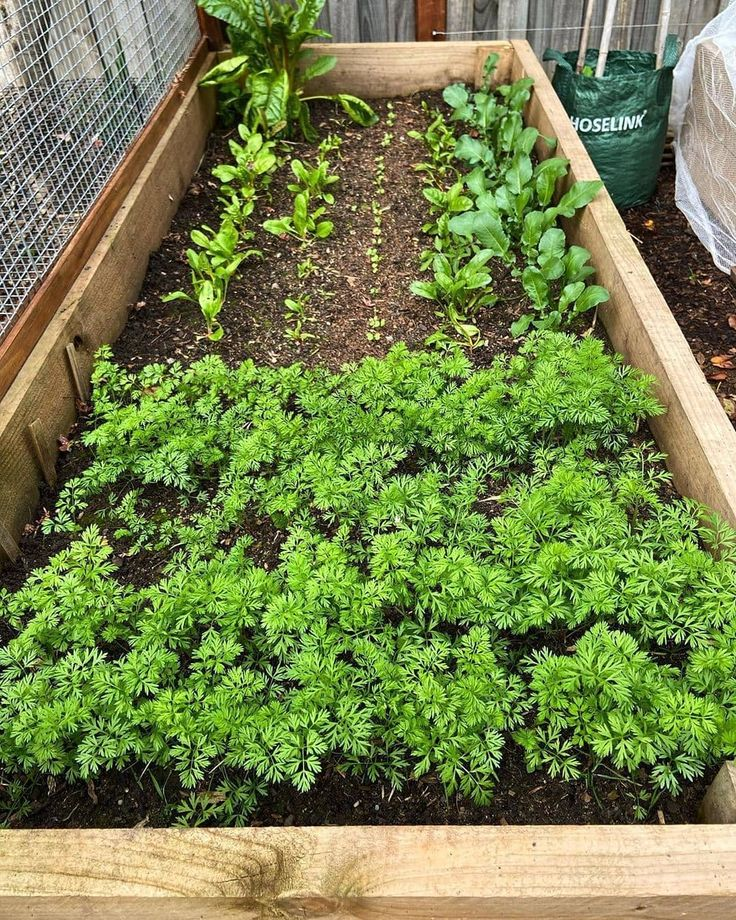

O que buscamos?
Nós da equipe Plantando Futuro temos como missão principal combater a fome e promover dignidade para famílias em situação de vulnerabilidade social. Acreditamos que o acesso à alimentação é um direito básico e urgente — por isso, trabalhamos na entrega de cestas básicas a quem mais precisa.

O que fazemos?
Atuamos diretamente na distribuição de cestas básicas e alimentos nutritivos, buscando atender comunidades que enfrentam insegurança alimentar diariamente. Além disso, investimos em iniciativas sustentáveis, como hortas comunitárias e parcerias com pequenos produtores, promovendo não só o combate à fome imediata, mas também o fortalecimento da autonomia e da agricultura local.